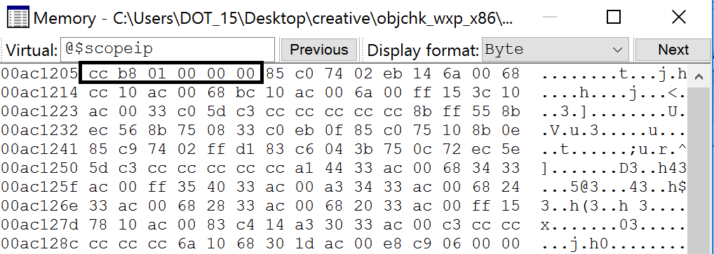
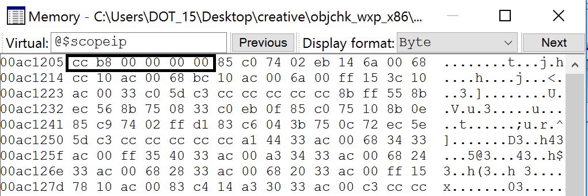
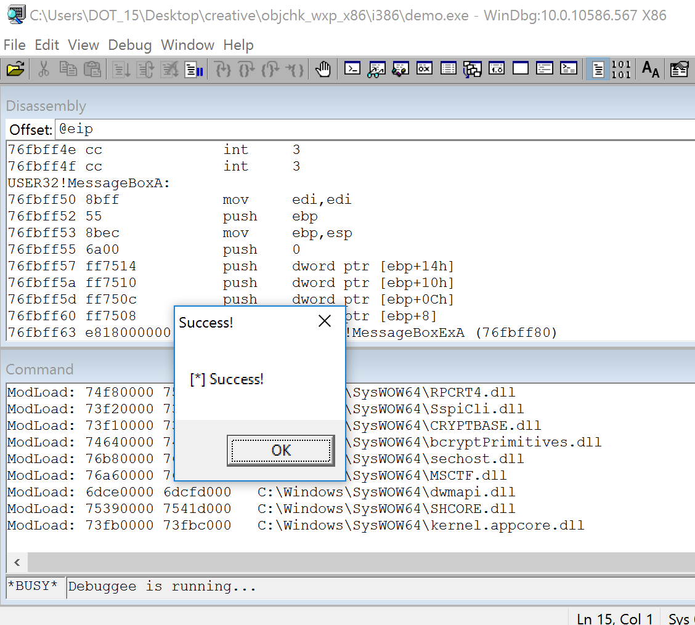

Intro to Reverse Engineering
0:000> da 00d010d8
00d010d8 "Instructor | email"
0:000> da 00d014a0
00d011a "Aaron Bray | aaron.m.bray@gmail.com"
Course Roadmap
0:000> dt demo!_COURSE_ROADMAP
+0x000 Introduction : Uint4B
+0x004 IntroDynamicAnalysis : Uint4B
+0x008 IntroStaticAnalysis : Uint2B
+0x00a IntroToCompilers : Uint2B
+0x00c WindowsInternalsPrimer : UChar
+0x00d DynamicRuntimeLinking : UChar
+0x00e ExecutableFileFormats : UChar
+0x00f LinkingAndLoading : UChar
+0x010 BinaryAnalysisConcepts : Uint4B
+0x014 CompilerOptimizations : Uint4B
+0x018 CPlusPlus : Uint4B
+0x01c AdditionalTopics : Uint4BObjectives
- Understand the basic goals of RE
- Introduce various types of analysis
- Identify translation of basic constructs from C to Assembly
Reverse Engineering
- Process of determining how a program (or set of programs) works (typically without access to source code)
- Wide variety of motivations
Types of Analysis
- Dynamic Analysis
- Focus on watching what happens at run time
- Debuggers and whole-system monitoring tools (such as procmon/procexplorer) may be utilized
- Static Analysis
- Focus on looking at disassembly, file sections and headers, etc
- Tools such as IDA Pro, radare2, and CFF Explorer, or python libraries such as pefile or elftools may be employed
- Other tools such as strings are also frequently used
- Combination
- May use both static and dynamic analysis to get results
Intro Dynamic Analysis
Objectives
- Understand and utilize, at a basic level, principles relating to dynamic analysis
- Understand the basic operation of debuggers
- Utilize, at a basic level, Windbg for the purpose of dynamic analysis
- Utilize, at a basic level, the Sysinternals tools for the purpose of dynamic analysis
- *mon tools (sysinternals) - Rather powerful instrumenting tools that give a good view of resource usage
- Debuggers - Allow us to inspect and trace through the execution of a given application
- (Linux) strace - Gives a list of system calls used by a given application
Procmon
- Can give lots of good information about process accesses
- Lots of filter options that can be leveraged
- Provides a good amount of insight into application I/O activity
Process Explorer
- Gives a great deal of useful information about what system resources a given process is interacting with
- Can view lots of good details regarding kernel objects accessed
- We will discuss this in greater detail later
Debuggers, How do they work, anyhow?
Basic Workflow:
- Open process
- Read/Modify memory
- Read/Modify register state
Breakpoints
Two Varieties: Hardware and Software
- Hardware - Utilizes Debug Registers
- Limited in number (DR0-3 on x86)
- Each register holds a linear address
- DR7 (the control register) dictates the condition to break on (read/write/execute)
- On some platforms (e.g., Linux), they require running in kernel mode to set/modify
- Software - the int3 (0xCC) instruction
Windbg
- The debugger we'll focus on in this course
- Doubles as both a user and kernel mode debugger
- Somewhat steep learning curve, but very aware of Windows internal state
- Lots of extremely useful extensions built-in
Windbg Displays
- All available via the "View" menu
- All act as snap-ins for the Windbg console
- Many times commands exist to display the same information
- Workspace can be saved/loaded between debugging sessions
Windbg View List
- Command - Interactive Command Prompt
- Watch - Watch window for manually specified/defined variables (castable to other types)
- Locals - Local variables visible in the current scope
- Registers - Editable register display
- Memory - An editable memory view; can display in a variety of formats (defaults to hex bytes)
- Call Stack - Displays the call stack relative to the current location
- Disassembly - Disassembly Window
Windbg - Breakpoints
- Hardware: ba [Access: r|e|w] [Size: 1|2|4] <address>
- Software: bp <address/location>
- Listing: bl
- Disable: bd
- Enable: be
- Clearing: bc <breakpoint number>
Symbols and Debugging
- What are debugging symbols?
- Symbolic information normally discarded during the compilation process
- Typically used to aid in debugging
- Microsoft provides stripped-down symbols for _most_ windows binaries
- Many otherwise-undocumented structures are exposed this way
- PDB - Documentation available via github: https://github.com/Microsoft/microsoft-pdb
- DWARF - http://dwarfstd.org
Symbols and Modules
- Handout on symbol configuration and issues
- Looking at Modules in a Process
- (windbg) lm - Lists the loaded modules (executable files) in a process
- (windbg) x <module>!<pattern> - Lists symbols exported by <module> that match <pattern>
Example: Examining Exported Symbols
0:000> lm
start end module name
006a0000 006a5000 demo (deferred)
744c0000 7463e000 KERNELBASE (deferred)
74730000 74810000 KERNEL32 (deferred)
77090000 7714e000 msvcrt (deferred)
771f0000 7736b000 ntdll (pdb symbols) <path>
0:000> x ntdll!ZwQuerySystem*
77266f30 ntdll!ZwQuerySystemInformation (<no parameter info>)
77267170 ntdll!ZwQuerySystemTime (<no parameter info>)
77268050 ntdll!ZwQuerySystemEnvironmentValue (<no parameter info>)
77268060 ntdll!ZwQuerySystemEnvironmentValueEx (<no parameter info>)
77268070 ntdll!ZwQuerySystemInformationEx (<no parameter info>)
Displaying Data
Dumping data at a location:
- (windbg) db <location> - dump as bytes
- (windbg) dw/d/q <location> - dump as WORDs/DWORDs/QWORDs
- (windbg) da <location> - dump as ASCII
- (windbg) du <location> - dump as Unicode
Searching
- (windbg) s - Search memory
Registers and Pointers
Register information:
- (windbg) r - Displays the current values stored in registers
Dumping Pointer Data:
- (windbg) dp <location> - Dump as pointer
- (windbg) poi(<location>) - Dereference pointer
Examining a pointer in a register:
0:000> r
eax=00d610bc ebx=00000000 ecx=771049b3 edx=00000000 esi=00000001 edi=00d6367c
eip=00d61251 esp=000cfc58 ebp=000cfc58 iopl=0 nv up ei pl nz na po nc
cs=0023 ss=002b ds=002b es=002b fs=0053 gs=002b efl=00000202
demo!main+0x31:
00d61251 cc int 3
0:000> da @eax
00d610bc "abcdef"
Disassembling
- In addition to the disassembly window, Windbg has the ability to disassemble both forward and backward
- (windbg) u <location> - unassemble forward
- (windbg) ub <location> - unassemble backward
- (windbg) uf <location> - unassemble function
0:000> x ntdll!ZwQuerySystem*
77266f30 ntdll!ZwQuerySystemInformation (<no parameter info>)
77267170 ntdll!ZwQuerySystemTime (<no parameter info>)
77268050 ntdll!ZwQuerySystemEnvironmentValue (<no parameter info>)
77268060 ntdll!ZwQuerySystemEnvironmentValueEx (<no parameter info>)
77268070 ntdll!ZwQuerySystemInformationEx (<no parameter info>)
0:000> u 77266f30
ntdll!NtQuerySystemInformation:
77266f30 b836000000 mov eax,36h
77266f35 bab0b52777 mov edx,offset ntdll!Wow64SystemServiceCall (7727b5b0)
77266f3a ffd2 call edx
77266f3c c21000 ret 10h
77266f3f 90 nop
ntdll!NtOpenSection:
77266f40 b837000000 mov eax,37h
77266f45 bab0b52777 mov edx,offset ntdll!Wow64SystemServiceCall (7727b5b0)
77266f4a ffd2 call edx
Stepping
Single step-in/over:
- (windbg) t - Trace - Single Step/step in
- (windbg) p - Step Over
More complex step operations:
- (windbg) tc/pc - Trace or Step to Call
- (windbg) tb - Trace to next branch (jmp or jcc)
Patching Memory
Windbg can directly edit memory during operation
- Bytes can be overwritten in the memory view window
- Windbg can also assemble in-place (essentially replacing instructions)
- (windbg) a <location> - Allows us to begin assembling starting at the given <location>
- Once you start, you can continue to assemble you hit enter on an empty line
- There is also an "edit memory" command:
- (windbg) e(b|d|w) <location> <value>
Hypothetical Crackme
demo!main:
00ac1200 8bff mov edi,edi
00ac1202 55 push ebp
00ac1203 8bec mov ebp,esp
00ac1205 cc int 3
00ac1206 b801000000 mov eax,1
00ac120b 85c0 test eax,eax
00ac120d 7402 je demo!main+0x11 (00ac1211)
00ac120f eb14 jmp demo!main+0x25 (00ac1225)
00ac1211 6a00 push 0
00ac1213 68cc10ac00 push offset demo!`string' (00ac10cc)
00ac1218 68bc10ac00 push offset demo!`string' (00ac10bc)
00ac121d 6a00 push 0
00ac121f ff153c10ac00 call dword ptr [demo!_imp__MessageBoxA (00ac103c)]
00ac1225 33c0 xor eax,eax
00ac1227 5d pop ebp
00ac1228 c3 ret
- Breakpoint at 00ac1205 (line 4)
- Comparison at 00ac120b (line 6) will always fail, and the "je" will be skipped
- The unconditional jump at 00ac120f (line 8) will take us to essentially the end of the function.
- How can we fix this, so that the "je" path gets taken?
Patching Some Bytes
One option:
00ac1206 b801000000 mov eax,1
00ac120b 85c0 test eax,eax
00ac120d 7402 je demo!main+0x11 (00ac1211)
- How can we make this case true?
Patching Some Bytes
- If we can make eax equal to zero, the jump will get taken
We now need to make this:
00ac1206 b801000000 mov eax,1
Look like this:
00ac1206 b800000000 mov eax,0
Memory Window
Memory Window (Part 2)
Result
demo!main:
00ac1200 8bff mov edi,edi
00ac1202 55 push ebp
00ac1203 8bec mov ebp,esp
00ac1205 cc int 3
00ac1206 b800000000 mov eax,0
00ac120b 85c0 test eax,eax
00ac120d 7402 je demo!main+0x11 (00ac1211)
00ac120f eb14 jmp demo!main+0x25 (00ac1225)
00ac1211 6a00 push 0
00ac1213 68cc10ac00 push offset demo!`string' (00ac10cc)
00ac1218 68bc10ac00 push offset demo!`string' (00ac10bc)
00ac121d 6a00 push 0
00ac121f ff153c10ac00 call dword ptr [demo!_imp__MessageBoxA (00ac103c)]
00ac1225 33c0 xor eax,eax
00ac1227 5d pop ebp
00ac1228 c3 ret
And Finally...
Alternatively...
Once we get here:
demo!main+0x5:
00ac1205 cc int 3
0:000> u
demo!main+0x5 [c:\users\dot_15\desktop\creative\main.c @ 9]:
00ac1205 cc int 3
00ac1206 b801000000 mov eax,1
00ac120b 85c0 test eax,eax
00ac120d 7402 je demo!main+0x11 (00ac1211)
00ac120f eb14 jmp demo!main+0x25 (00ac1225)
00ac1211 6a00 push 0
00ac1213 68cc10ac00 push offset demo!`string' (00ac10cc)
00ac1218 68bc10ac00 push offset demo!`string' (00ac10bc)
Assembling
We could:
0:000> a 00ac1206
00ac1206 mov eax, 0
mov eax, 0
00ac120b
Which would also yield the same result:
00ac1206 b800000000 mov eax,0
00ac120b 85c0 test eax,eax
00ac120d 7402 je demo!main+0x11 (00ac1211)
*** CAUTION: Be cautious when doing this, as it can change the meaning of adjacent instructions ***
Problems with This Demo
- This entire demo is predicated on having symbols
- Many times, symbols will not be available
- Program's real entry point (e.g., main) will have to be located
How to Proceed
- $exentry will give the target binary's entry point
- Getting to main will require wading through crt startup code
- Fortunately, CRT source is provided via Visual Studio
- Initialization steps are fairly similar
- mcrtexe.cpp - under "vcruntime" (VS2015)
- Other files exist, for other subsystems
Other Suggestions
- Look for functions that will likely be called sometime during CRT initialization and set breakpoints
- Be aware of differences between XP and Windows Vista+ - some Kernel32 functions now live in KERNELBASE
- Good targets might be environment and command line setup (e.g., GetCommandLineA|W, GetEnviron)
- Can also look for CRT methods that may be equivalent, if those methods are not in the imports list
- Examining the number of args in the string (e.g., "da <arglist>" after GetCommandLineA returns) yields argc
- Tracing to next call (tc or pc), and examining args passed to function will help to locate entry point